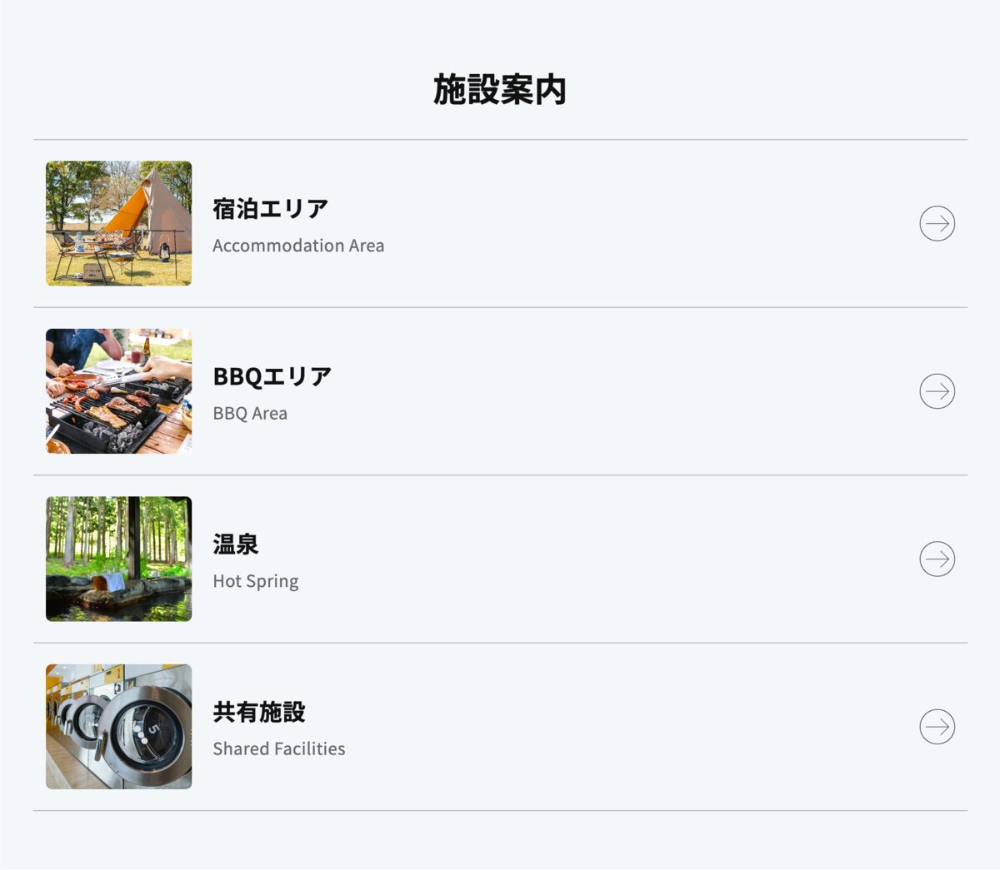
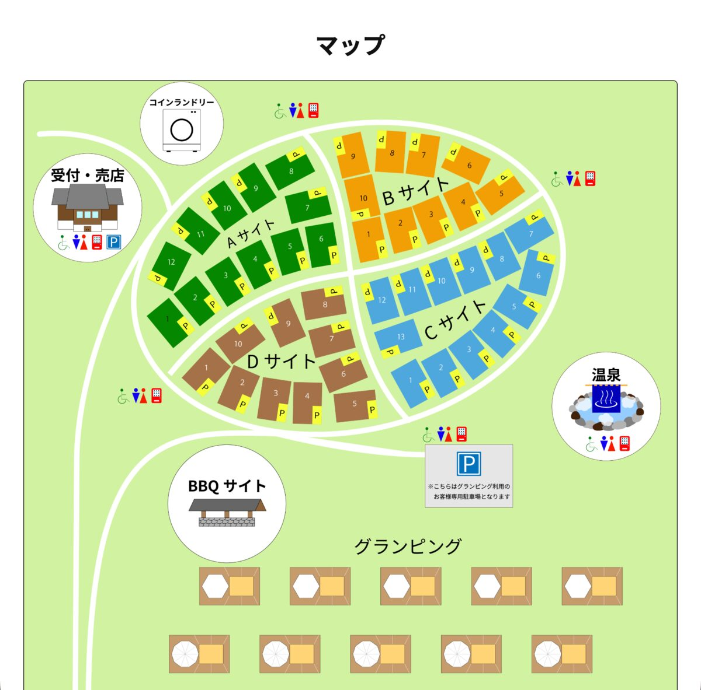

制作の目的
実在のキャンプ場サイトを参考にしながら、デザインはテンプレートに頼らず一から考えました。「静かに過ごせる場所」というコンセプトを、写真・配色・コピーライティングの3つで一貫して伝えることを目標にしました。
ページ構成
トップページ(index.html)にファーストビュー・マップ・施設案内・アクセス・予約導線をまとめ、各施設(宿泊・BBQ・温泉・共用施設)は個別ページ(accommodation.html / bbq.html / hotspring.html / shared-facilities.html)に詳細を分けています。情報量が多くなりすぎないよう、トップは概要、詳細ページは深掘り、という役割分担を意識しました。

工夫した点
一番力を入れたのは、Illustratorで一から作成した場内マップです。A〜Dの各サイトを色分けし、駐車場・多目的トイレ・自動販売機などの設備を統一されたアイコンで表現することで、文章で説明しなくても場内の様子が直感的に伝わるようにしました。あわせて、予約・お問い合わせボタンの配色を分けて視認性を高めるなど、初めて訪れる人が迷わない導線づくりを意識しています。

苦労した点・学んだこと
ページ数が多いため、共通パーツ(ヘッダー・フッター・カードデザインなど)をあらかじめ整理してから各ページに展開しました。マップのアイコンをすべて統一感のあるテイストで揃える作業には特に時間がかかりましたが、Illustratorでオブジェクトをコンポーネント的に管理する考え方を学ぶ良い機会になりました。